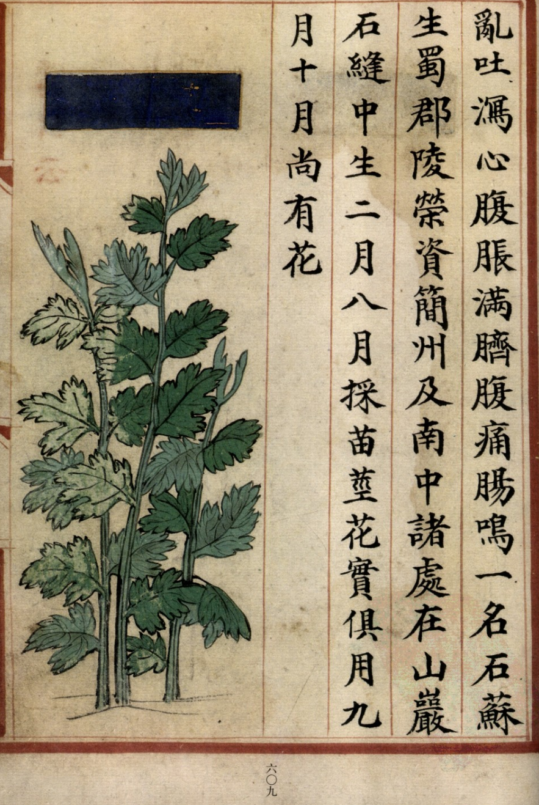
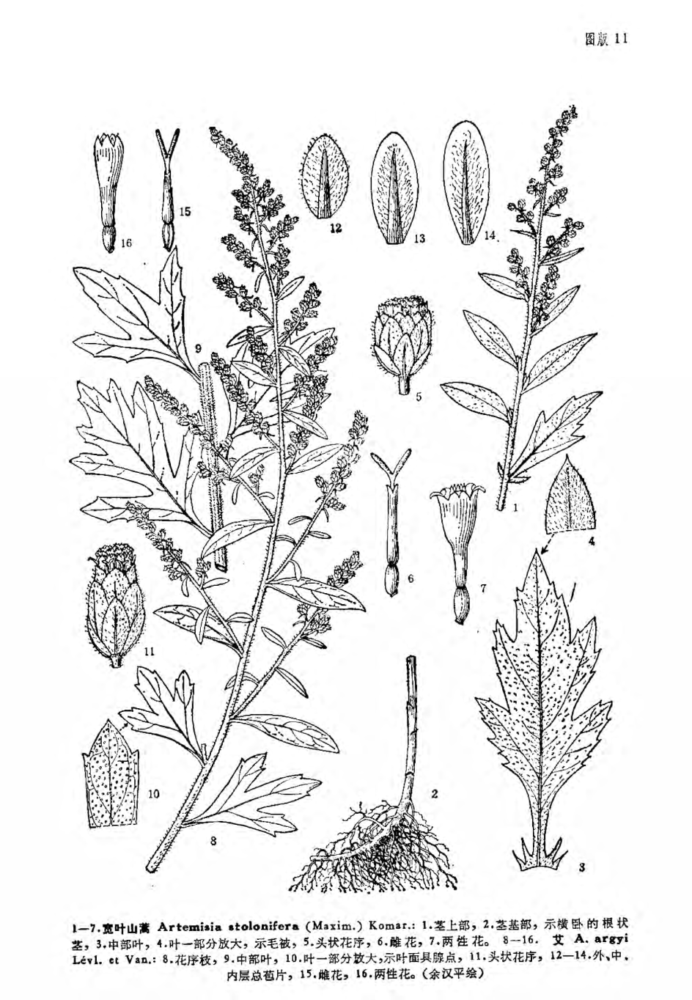

出现篇目
别名 艾蒿（尔雅、本草纲目），白蒿[神农本草经（部分）、本草纲目（部分）]，冰台（尔雅），医草（名医别录），甜艾（本草求原），灸草（埤雅），海艾、白艾、蕲艾（本草纲目），阿及艾（江苏南部种子植物手册），家艾、艾叶、陈艾（中药俗称），大叶艾、祁艾（河北），大艾、艾绒、艾蓬（江苏、江西、上海），五月艾（福建、广东、四川），黄草（台湾），野艾（湖北、湖南、广东、四川），白陈艾、家陈艾（四川），红艾、火艾（云南），“恰尔古斯一苏伊加”、“荽哈”（蒙语名），“黑阴威”（瑶族土名）。
古代记载 《毛诗故训传》
艾所以疗疾。（《毛传》注《采葛》）
《诗集传》
艾、蒿属。 干之可灸。（《诗集传》集注《采葛》）
《本草纲目》
《别录》曰∶艾叶生田野，三月三日采，曝干。
颂曰∶处处有之，以复道及四明者为佳，云此种灸百病尤胜。初春布地生苗，茎类蒿，叶背白，以苗短者为良。三月三日，五月五日，采叶曝干。陈久方可用。
时珍曰∶艾叶本草不着土产，但云生田野。宋时以汤阴复道者为佳，四明者图形。近代 惟汤阴者谓之北艾；四明者谓之海艾。自成化以来，则以蕲州者为胜，用充方物，天下重之，谓之蕲艾。相传他处艾灸酒坛不能透，蕲艾一灸则直透彻，为异也。此草多生山原。 二月宿根生苗成丛，其茎直生，白色，高四五尺。其叶四布，状如蒿，分为五尖，丫上复有小尖，面青背白，有茸而柔浓。七、八月，叶间出穗如车前穗，细花，结实累累盈枝，中有细子，霜后始枯。皆以五月五日连茎刈取，曝干收叶。先君月池子讳言闻，尝着《蕲艾传》 一卷。有赞云∶产于山阳，采以端午。治病灸疾，功非小补。又宗懔《荆楚岁时记》云∶五月五日鸡未鸣时，采艾似人形者揽而取之，收以灸病，甚验。是日采艾为人，悬于户上，可禳毒瓦斯。其茎干之，染麻油引火点灸炷，滋润灸疮，至愈不疼。亦可代蓍策，及作烛心。
当代记载 《中国植物志》
艾（Artemisia argyi），菊科、蒿属植物，多年生草本或略成半灌木状，植株有浓烈香气。花果期7-10月。分布广，除极干旱与高寒地区外，几遍及全国。生于低海拔至中海拔地区的荒地、路旁河边及山坡等地，也见于森林草原及草原地区，局部地区为植物群落的优势种。

<补遗雷公炮制便览>

<中国植物志>